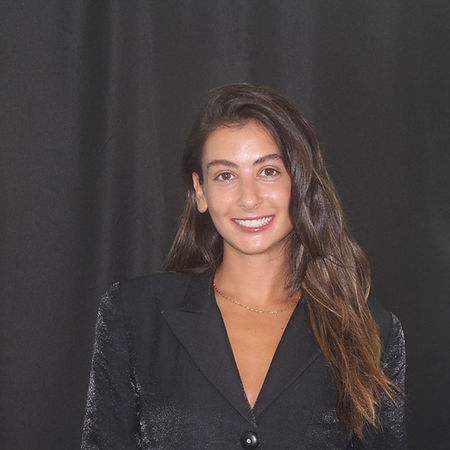

Nelson Spence
Founder, Project Navi
Nelson builds software and researches AI security, formal verification, and dynamical systems, with a focus on autonomy and self-determination.
Founder, Project Navi
Nelson builds software and researches AI security, formal verification, and dynamical systems, with a focus on autonomy and self-determination.
Philosophy & Communication, UCLA
Jenna captains UCLA’s Intercollegiate Ethics Bowl team, founded Black Bruins in Philosophy, and researches youth wellbeing with Education for Flourishing at Saint Louis University.
Alignment Researcher, Anthropic
Ben works on formal epistemology, decision theory, and the philosophy of AI. He has held posts at Rutgers, Bristol, and Oxford’s Future of Humanity Institute.
International Fellow, Democratic Resilience Center
Joseph specializes in arms control, nuclear weapons, AI, and international security. He holds a master’s from Brandeis University and is an international fellow at Helmut Schmidt University.

Philosopher of AI Ethics
Paula has held posts at Bristol, ANU, Cardiff, and Oxford. Her books include Towards a Code of Ethics for Artificial Intelligence and AI Ethics: A Textbook.
Head of Marketing, Verity
Ana leads the VerityEd Media Impact Lab. A multilingual journalist and University of Toronto graduate, she focuses on algorithmic and media literacy education.